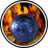

|

|
>> Содержание / Список кланов /
  SaintBrotherS SaintBrotherS
История Летописца о Братьях.
"История о Братьях."
Я помню все. Как только я закрываю глаза, я вижу их, словно это было вчера….
Дорога была пустынна. Первые лучи утреннего солнца озаряли её и всё вокруг мягким, ровным светом, утренний туман уже рассеялся и только капли росы на травинках, сверкали в солнечных лучах, напоминая о недавно прошедшей ночи. Тьма все еще цеплялась за лес, покинутый мной незадолго до рассвета, но солнечные лучи гнали ее все дальше и дальше, начинался новый день и свет вступал в свои права, продолжая свою вечную битву с тьмой, битву начатую не известно кем и когда. Душа моя наполнялась спокойствием, ночные тревоги отступали вместе с клочьями темноты, как бы спеша за отступающей тьмой. Изредка вдруг начинала щебетать птица, но потом вдруг словно испугавшись, прерывала свою песню на высокой ноте, и опять наступала тишина.
Гигантские дубы неведомо кем и когда посаженые вдоль узкой дороги, широко раскинули свои толстые кривые ветви, как будто пытались поймать путников идущих по ней, а может быть наоборот, пытаясь, защитить одинокого странника от неведомой опасности, грозящей ему. Я уже шел однажды по этой извивающейся подобно исполинской змее дороге, ведущей в город Дьявола, о боже как это было давно, так давно, что иногда я спрашиваю себя, а было ли это на самом деле. Я вижу себя беззаботно бегущего с копной развевающейся на ветру волос. Отец, большой и сильный, уверенным шагом идущий по краю дороги, рядом с ним мать, мне не раз говорили, что у меня ее глаза, а я совсем не помню ее лица, братья, в полголоса рассказывающие друг другу о своих похождениях в таверне, где мы недавно ночевали. Как давно это было, как сильно все изменилось, но дорога осталась все той же узкой, с обступившими ее с обеих сторон дубами и я вновь иду по ней, но теперь я один, я ищу….
Дорога в очередной раз вильнула и вдруг, я увидел впереди опушку с одиноко стоящим дубом, к ней с трех сторон приближались три странника. Приблизившись, я смог разглядеть их.
Первый был высок, крепок и облачён с ног до головы в сияющие доспехи, от которых отражались лучи восходящего солнца, казалось, он весь окутан светом, на плече он нес огромный двуручный меч, с рукоятью сделанной в форме головы дракона, держащего огромный синий камень в пасти. Никогда доселе я не видел таких воинов.
Второй был в белом балахоне с капюшоном, вышитым золотой каймой по краям, которая искрилась на солнце, иногда мне казалось, что по ней пробегают молнии. В правой руке у него был жезл, с синим шаром на верху, из шара исходил пульсирующий свет, озарявший идущего, казалось, что жезл живет своей жизнью. Я не видел ее лица, оно было скрыто капюшоном, но я чувствовал на себе ее взгляд, от которого у меня похолодело внутри. Да, я не сомневаюсь, это была ОНА.
Третий же вообще не был человеком, мне трудно его описать. Никакой одежды кроме рогатого шлема, с огромным синим камнем, вделанным между рогов, на нем не было. Он напоминал огромного волосатого гоблина, но это был не гоблин, я знаю гоблинов, я видел их не раз. В руках у него был топор, но я уверен, что не это самое страшное его оружие.
От всего увиденного мною по телу пробежали мурашки, я напрягся и замер, ожидая неминуемой битвы. Когда же они сблизились совсем, я попятился назад и выхватил меч, опасаясь, что сейчас начнётся битва, но всё вышло совсем не так, как я ожидал. Они подошли друг к другу и пожали руки, словно они знали друг друга много лет. Мне стало любопытно и я стал осторожно приближаться к ним, подойдя, я услышал часть их беседы. Я понял, что объединяет их, пришедших сюда, таких разных не только физически, но и духовно. Общие несчастья связали их крепче кровных уз, гибель любимых им людей от воинов тьмы, заковали их сердца в броню, беды, постигшие их земли, заставили взяться за оружие и объединится против сил тьмы, для восстановления былого равновесия. И поклялись они "Брат за Брата в жизни и смерти".
И пошли они втроём по дороге, но вдруг обернулись и посмотрели на меня…
Официальный сайт клана: http://www.saintbrothers.ru
|
 |
|